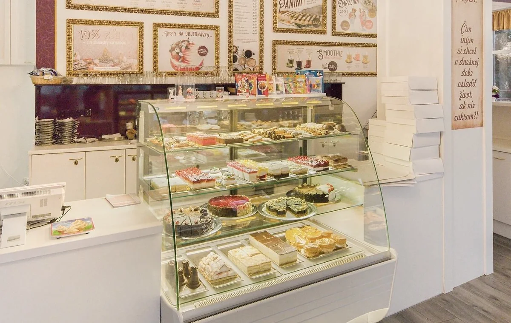
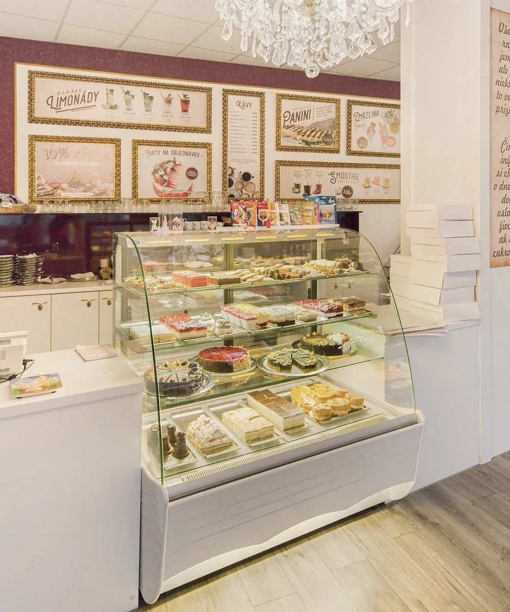
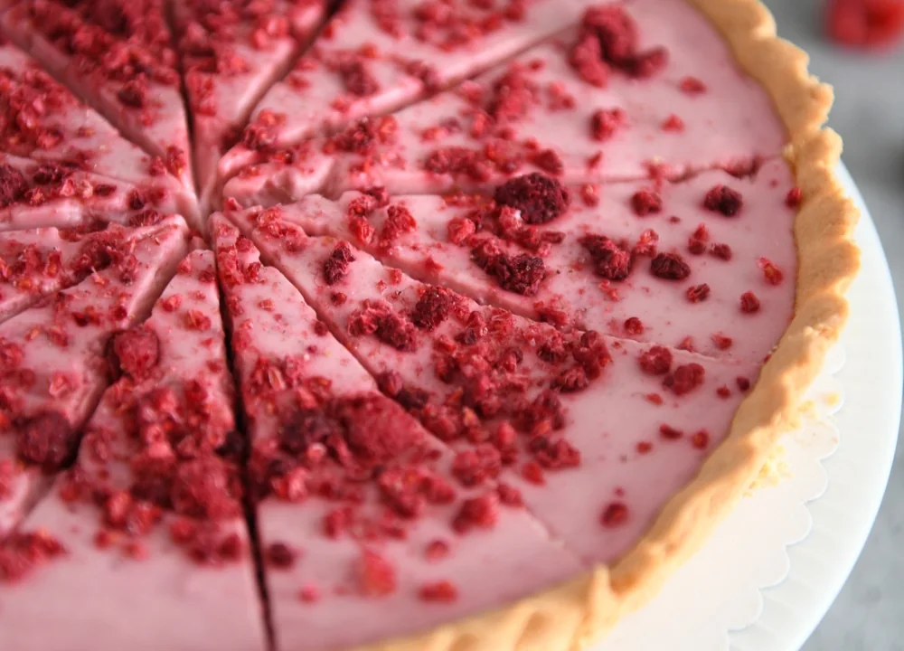
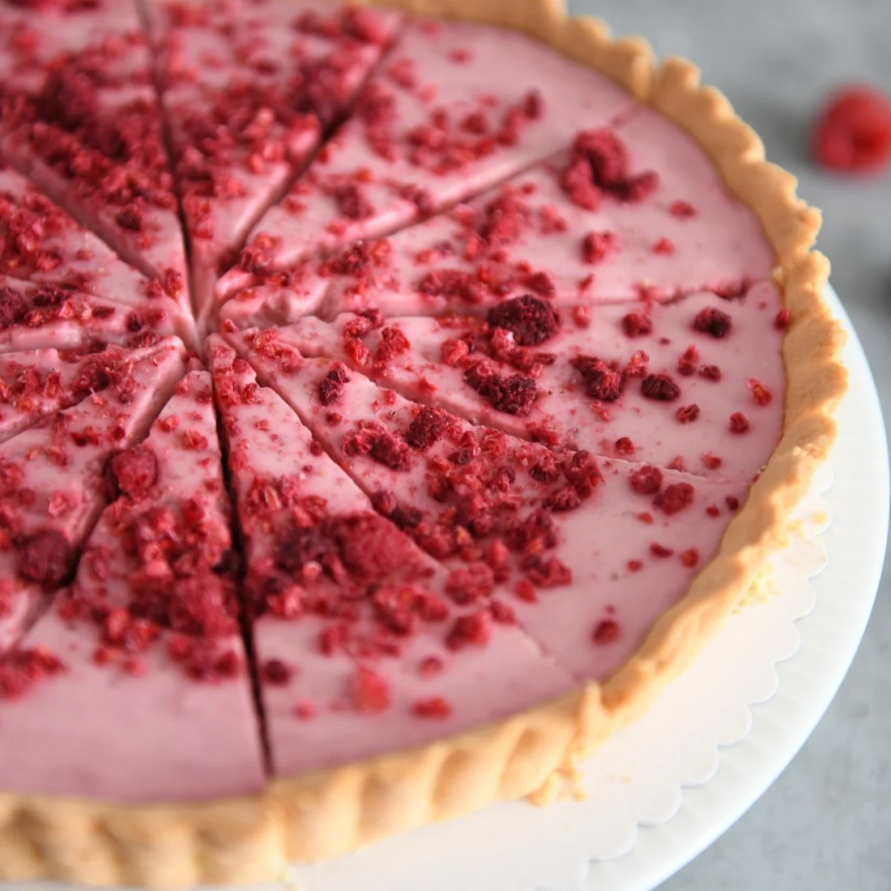
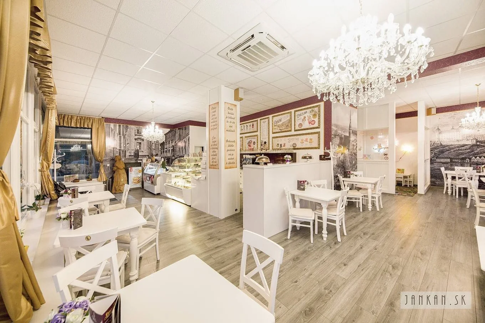

Na chvíľu pre seba
Zákusky ku káve aj domov
Veterníky, krémeše, rezy, tortičky, rolády a ďalšie kúsky podľa aktuálnej ponuky.
Overiť dnešnú ponukuKarlova Ves · každý deň 10:00 – 19:00
Klasické obľúbené kúsky, nové chute aj torty na objednávku — na Tománkovej ulici, len pár minút od centra Bratislavy.

Čo si u nás vyberiete
Ponuka spája známe klasiky s modernejšími dezertmi. Dostupnosť konkrétnych kúskov sa môže počas dňa meniť.

Na chvíľu pre seba
Veterníky, krémeše, rezy, tortičky, rolády a ďalšie kúsky podľa aktuálnej ponuky.
Overiť dnešnú ponuku
Na oslavu
Vybrané torty je možné pripraviť už na nasledujúci pracovný deň.
Ako objednaťAlternatívy
V ponuke sú aj vybrané koláčiky a torty bez lepku či laktózy a vegánske raw torty.
Opýtať sa e-mailomNiečo slané
Doplnenie k oslave, posedeniu alebo objednávke podľa aktuálnej ponuky.
Zistiť dostupnosť
Torty na objednávku
Vybrané torty viete objednať do 12:00 na nasledujúci pracovný deň. Objednávky na sobotu a nedeľu je potrebné odovzdať do piatku do 12:00.
Príchuť, veľkosť a vzhľad si potvrďte telefonicky alebo e-mailom.
Pri rýchlej objednávke záleží na dostupnosti konkrétnej torty a surovín.
Objednávku si prevezmete priamo v prevádzke na Tománkovej 2/a.
O Cukrárni u Babičky
Názov cukrárne vychádza z domácich zákuskov a receptov, ktoré majú pripomínať pečenie od babičky. V ponuke sa objavujú klasiky ako punčový rez, špic či veterník, ale aj modernejšie kombinácie a sezónne kúsky.
Cieľom nového webu je umožniť návštevníkovi rýchlo pochopiť ponuku, nájsť prevádzku a bez zložitého hľadania zavolať alebo napísať kvôli objednávke.
„Veľmi príjemné prostredie. Výborné koláčiky a zákusky. Milý personál.“Verejná recenzia na SDEŤMI.com, 2021

Galéria
Ukážka skutočného interiéru, vitríny a jedného z dezertov. Vo finálnej galérii odporúčame doplniť viac aktuálnych záberov.
Máte chuť alebo plánujete oslavu?
Napíšte nám
Pošlite krátku správu. Pri objednávke torty uveďte termín, približnú veľkosť a predstavu o príchuti.